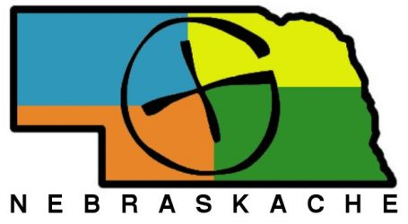

Nebraskache
We are hiding something new for you soon
Nebraska's geocaching community is building a new home. We promote, organize, and connect geocachers across the state — from the Platte River to the Sandhills. Check back soon for events, resources, and ways to get involved.